The slide of the lecture is on the left, the same figure on the right, computed in the browser from the same data. The ▶ button moves the parameter step by step.
What We Forecast and Where the Signal Is · Attention and Transformers · Test 1: Forecasting Returns · Test 2: Forecasting Realised Volatility · Test 3: VaR 1% and ES 2.5% · Case Study: The Virtue of Complexity · AI for Scientific Discovery
What We Forecast and Where the Signal Is
Where Is the Signal?
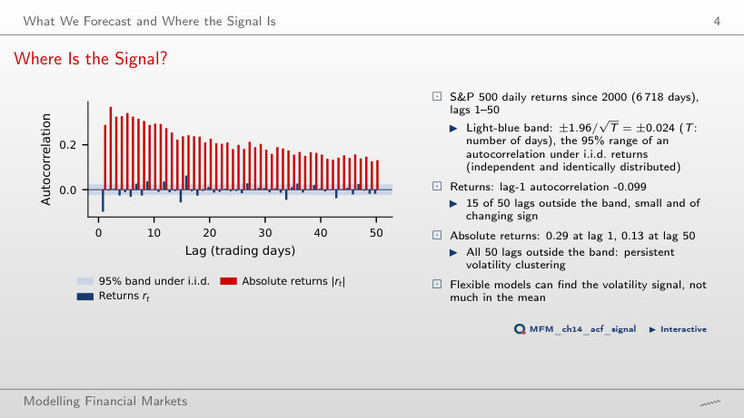
Answer
The absolute values. Their autocorrelation is 0.29 at lag 1 and still 0.13 at lag 50, and all 50 lags lie outside the ±0.024 band. Returns have a lag-1 autocorrelation of −0.099 and 15 lags outside the band, small and of changing sign.
Attention and Transformers
Patching a 512-Day Context
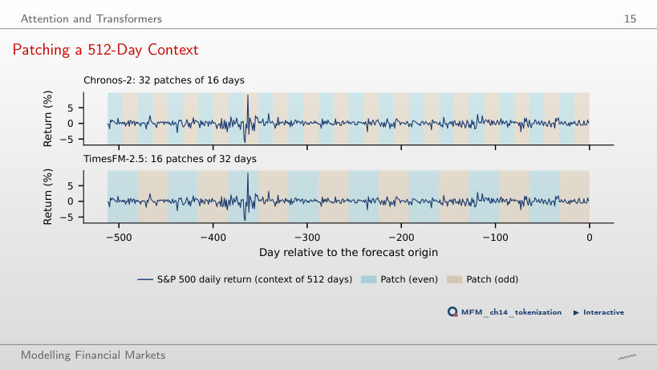
Answer
32 tokens give 32² = 1,024 scores, against 512² = 262,144 if each day were a token: 256 times fewer. TimesFM-2.5 uses patches of 32 days, so 16 tokens and 256 scores.
Test 1: Forecasting Returns
Out-of-Sample R² for Returns
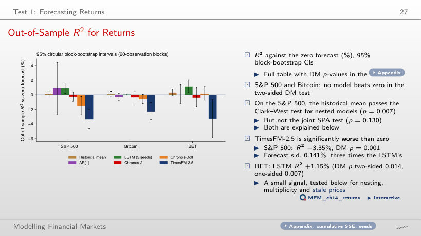
Answer
Not in the two-sided DM test: p = 0.639 for AR(1) and 0.090 for the LSTM. TimesFM-2.5 is significantly worse than zero (R² −3.35%, DM p = 0.001). Only on the BET does the LSTM pass at 5% (R² +1.15%, p = 0.014), before the correction for multiple tests.
Test 2: Forecasting Realised Volatility
Forecasts Through the April 2025 Shock
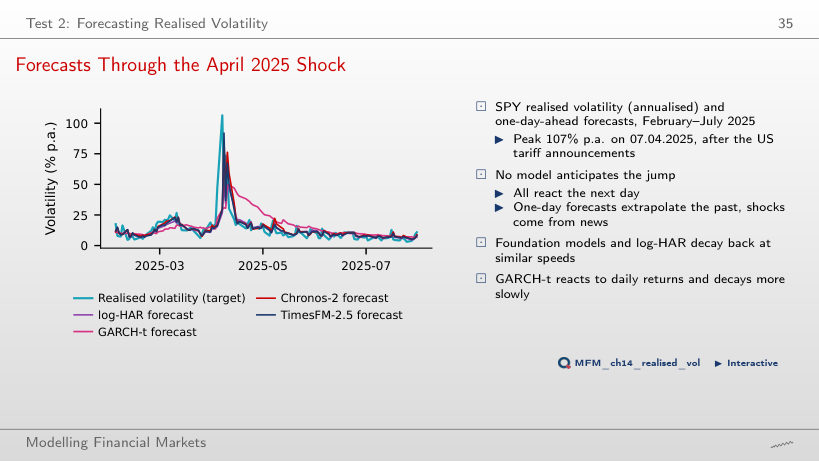
Answer
None. All forecasts rise only the next day: a one-day forecast extrapolates the past, and the shock came from the tariff announcements. The foundation models and log-HAR then decay at similar speeds; GARCH-t decays more slowly.
QLIKE Losses of Eight Volatility Models
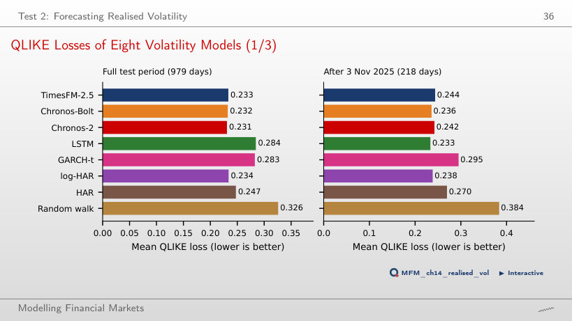
Answer
Its mean QLIKE loss is lower (0.231 against 0.234), but the DM test is not significant (p = 0.537), and the 90% model confidence set keeps six of the eight models. After 3 November 2025 the small LSTM is best (0.233).
Test 3: VaR 1% and ES 2.5%
VaR 1% Breach Rates
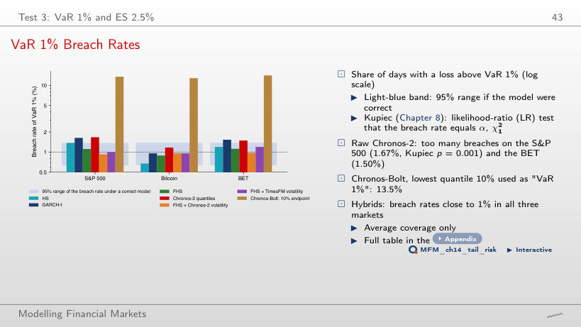
Answer
No. The rate is 1.67% against an expected 1% (Kupiec p = 0.001), above the upper limit of 37 breaches of the 95% range. Used as a volatility filter for FHS, the same model gives 0.93% (p = 0.71).
The COVID-19 Crash: VaR 1% of Three Models
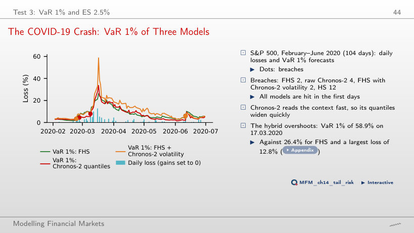
Answer
Not necessarily. Both have 2 breaches in 104 days, but the hybrid overshoots: its VaR 1% reaches 58.9% on 17.03.2020, against 26.4% for FHS and a largest daily loss of 12.8%. Raw Chronos-2 has 4 breaches, HS 12.
The Probability Integral Transform (PIT) and Calibration
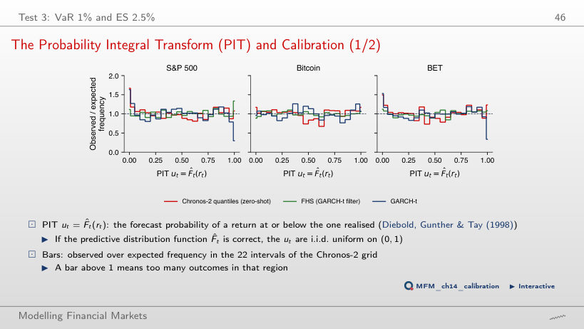
Answer
On 1.67% of the days, so the first PIT bar is about 1.7 times its expected height: the lower tail of the zero-shot distribution is too thin. FHS gives 1.11%. The Berkowitz test rejects Chronos-2 on the S&P 500 (p = 0.019, σ̂ = 1.03) and never rejects FHS.
Comparing (VaR 2.5%, ES 2.5%) Forecasts: the MCS
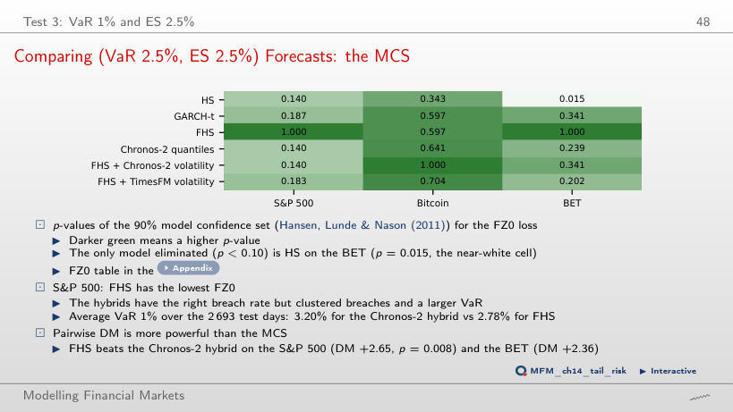
Answer
Only HS on the BET (p = 0.015). On the S&P 500 FHS has the lowest FZ0 loss, and the pairwise DM test, more powerful than the MCS, shows that FHS beats the Chronos-2 hybrid (DM +2.65, p = 0.008).
Adaptive Conformal VaR 1% on the S&P 500
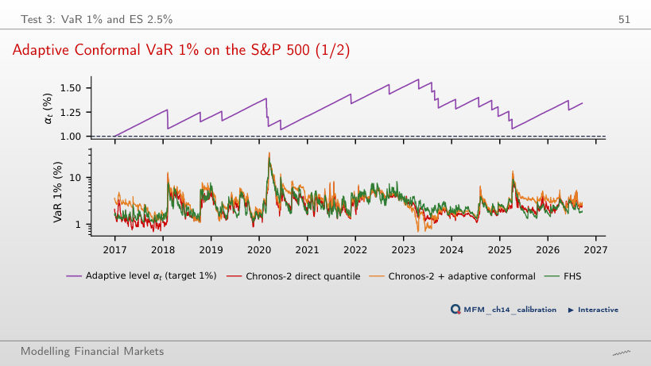
Answer
21 breaches against 24.4 expected over 2,443 days, but an average VaR 1% of 3.36% against 2.85% for FHS on the same days, so the FZ0 loss is significantly higher. With γ = 0 (split conformal) there are 16 breaches and an average VaR of 3.58%.
Case Study: The Virtue of Complexity
Case Study: Complexity on Course Data
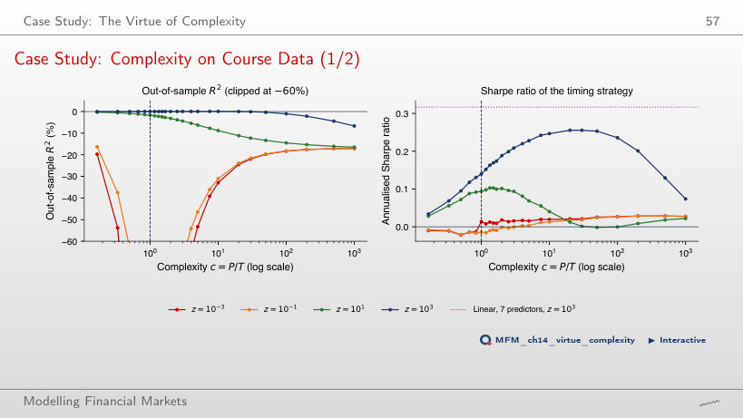
Answer
No. With z = 10³ it rises from 0.14 at c = 1 to 0.26 at c = 20 and falls to 0.07 at c = 1,000 (t = 0.4). The linear model with the same 7 predictors and z = 10³ has 0.32. Complexity helps up to c ≈ 20, not up to c = 1,000.
AI for Scientific Discovery
Mini-Case: a Test Without Power
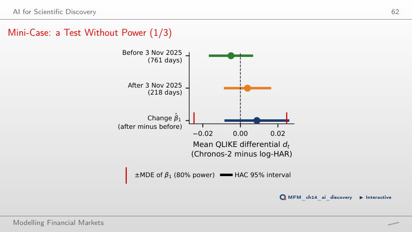
Answer
No. The change has a HAC t of 1.00 and p = 0.32, and the minimum detectable effect at 80% power is 0.0247, 4.9 times the pre-release gap. Even an infinite post-release window would leave an MDE of 0.0169, so “no memorisation” is not a finding either.
Daily returns of the S&P 500, Bitcoin and the BET and 5-minute SPY prices: EODHD. One-day-ahead forecasts: Quantlets/Ch_14 (run_forecasts.py). Case study: SPY (EODHD) and FRED series.